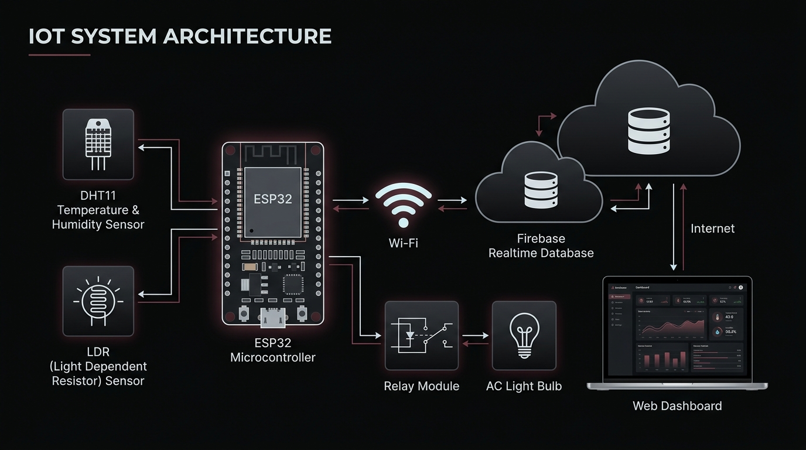
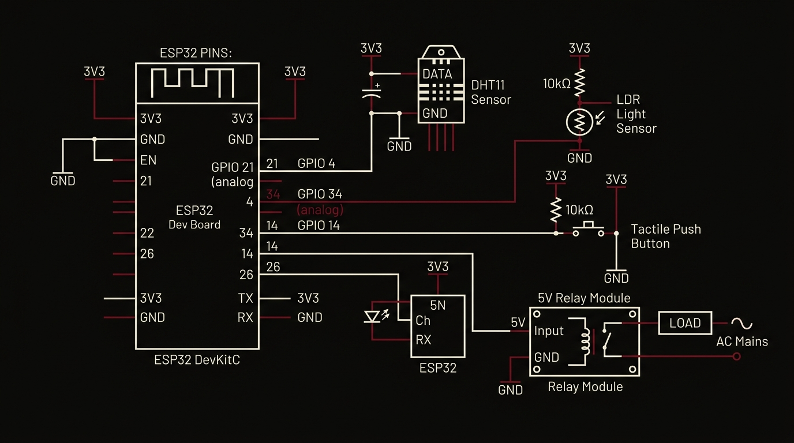
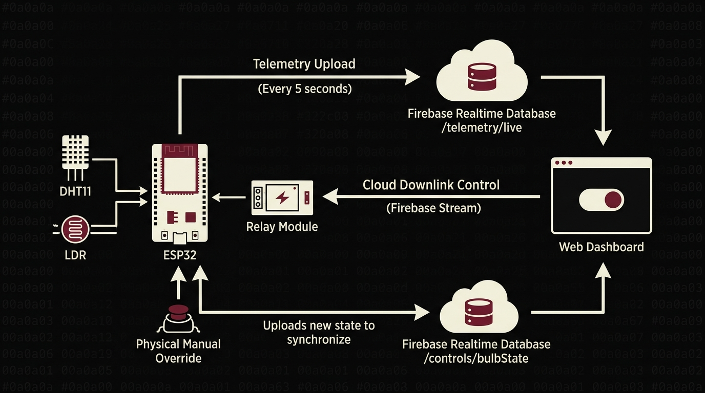
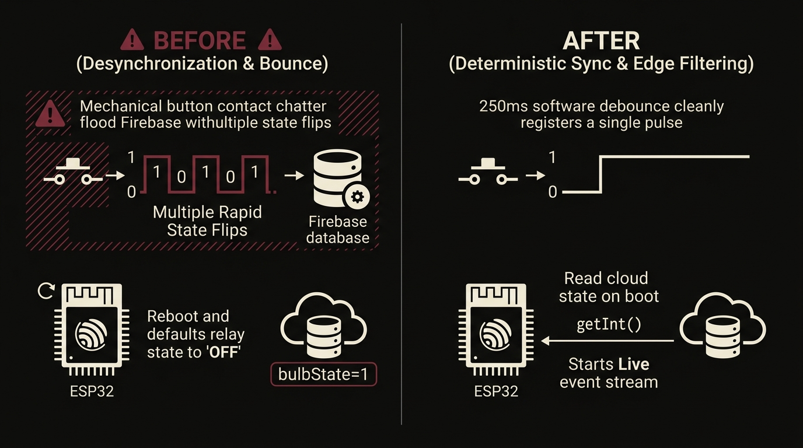
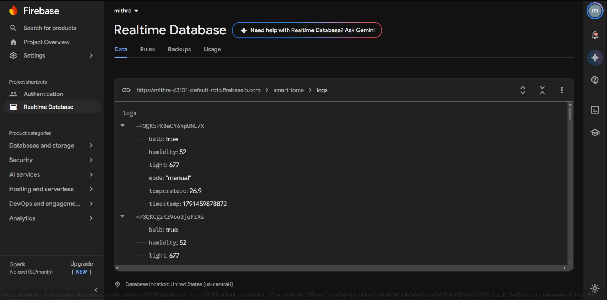
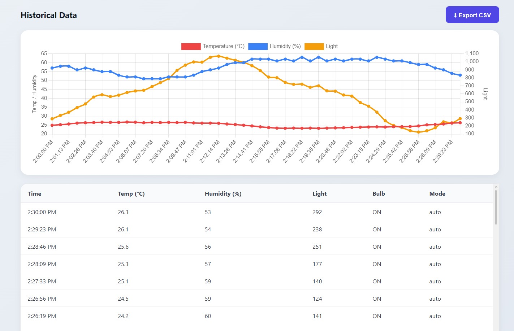
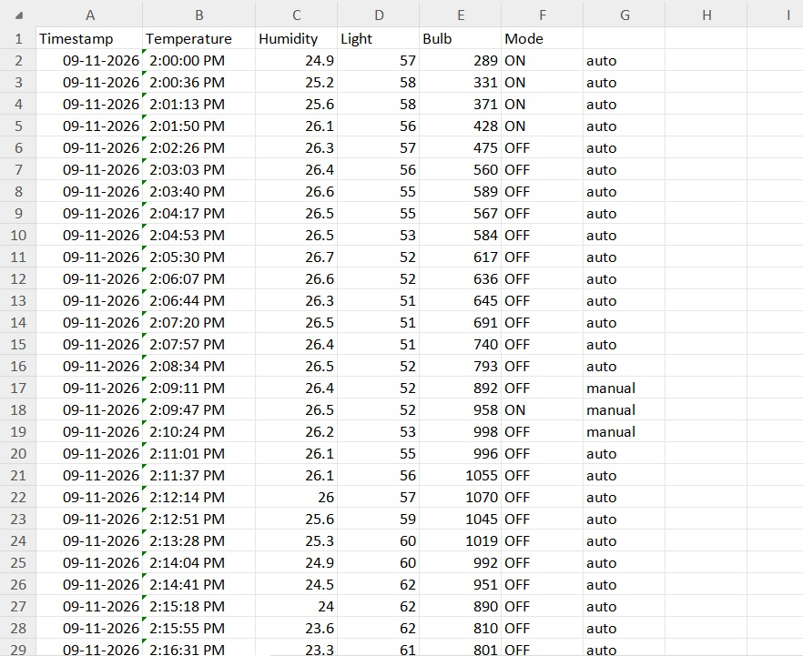

Task 05: Firebase Hardware Integration
Bridging physical embedded electronics with Firebase Realtime Database. Autonomous 5-second multi-sensor telemetry streaming, real-time push actuation of 230V AC loads via optocoupled relays, and seamless dual-master edge-cloud synchronization with hardware button debouncing.
1. Overview
Task 05 bridges physical sensor hardware, electrical switching actuators, and the cloud web dashboard engineered in Task 04. An ESP32 Dev Module acts as an edge IoT node directly connected to physical inputs and outputs, establishing a continuous, bidirectional synchronization loop with Firebase Realtime Database.
The microcontroller samples ambient environmental conditions using a DHT11 temperature and humidity sensor on GPIO 4 and an LDR light sensor on GPIO 34, streaming structured JSON payloads to /telemetry/live every 5 seconds. Concurrently, the firmware listens to an event stream on /controls, instantly actuating a 5V relay module on GPIO 26 whenever the cloud state changes. To complete the bidirectional loop, a local tactile push button on GPIO 14 enables manual physical override, toggling the relay locally and immediately updating /controls/bulbState in the cloud.

Through this architecture, the physical appliance, the cloud database, and the web browser dashboard remain strictly synchronized at all times, regardless of whether control originates from a browser click or a physical button press.
2. What I Was Trying to Build
The core engineering objective was to solve the multi-master synchronization problem in distributed IoT: how to reliably synchronize physical hardware state and ambient sensor readings with a cloud web interface without tight coupling or continuous polling.
The system fulfills three distinct requirements:
- Autonomous Telemetry Uplink: Continuously sample analog and digital environmental sensors at the edge and persist readings in the cloud.
- Zero-Latency Downlink Actuation: Receive cloud control commands immediately using persistent event streams rather than wasteful HTTP polling loops.
- Deterministic Dual-Control Parity: Support local manual switching via physical button while keeping the remote web dashboard toggle in lockstep.
3. Why This Task Matters
While Task 4 validated frontend cloud communication through simulated console data, Task 5 integrates actual physical hardware subject to real-world embedded challenges:
4. Learning Objectives
- Interface a single-wire digital sensor (DHT11) with the ESP32 and extract calibrated temperature and humidity readings.
- Construct a resistive voltage divider circuit with an LDR and sample the ESP32's 12-bit ADC (
GPIO 34), mapping raw counts (0–4095) to percentage light level (0–100%). - Implement non-blocking software scheduling using
millis()timers to upload telemetry every 5 seconds without stalling the main loop. - Integrate the
Firebase_ESP_Clientlibrary, authenticating via anonymous sign-in and maintaining token validity. - Subscribe to live cloud mutations using Firebase RTDB event streams (
beginStreamandstreamCallback) for push-driven actuation. - Implement software edge detection and debounce timing (250 ms) for physical momentary push buttons on
INPUT_PULLUPpins. - Prevent startup state desynchronization by performing an initial state read (
getInt) on boot before initiating the stream. - Drive an active-LOW optocoupled relay safely, ensuring safe boot-time pin initialization.
5. Complete System Architecture
The physical and logical architecture bridges five discrete computational zones:
/telemetry/live payloads and dispatching mutations on /controls/bulbState over WebSocket/SSE channels.onValue) rendering live cards and bidirectional switch toggle.6. System Components
Interactive layer sequence detailing the role of each architectural building block:
7. Hardware & Wiring Schematic
All sensor and actuator lines interface directly with designated ESP32 pins. The pin assignments and signal types are strictly documented below:

| Component | ESP32 Pin | Signal Type | Operating Voltage | Electrical Configuration |
|---|---|---|---|---|
| DHT11 Data | GPIO 4 |
Digital I/O (Bidirectional) | 3.3V VCC | Single-wire custom digital pulse train |
| LDR Voltage Divider | GPIO 34 |
Analog Input (ADC1_CH6) | 0V – 3.3V Analog | Input-only pin; divider with fixed 10kΩ pull-up |
| Tactile Push Button | GPIO 14 |
Digital Input | 0V / 3.3V Logic | Internal INPUT_PULLUP; active-LOW on press |
| Relay Module IN1 | GPIO 26 |
Digital Output | 3.3V Logic / 5V Coil | Active-LOW optocoupled driver; 0V energizes coil |
COM and NO terminals on the isolated side. All AC connections were terminated inside insulated blocks with mains power physically disconnected before testing.
8. Communication & Data Flow Architecture
The communication pipeline coordinates three independent channels between the edge hardware, Firebase cloud, and browser dashboard:

FirebaseJson object and written to /telemetry/live using Firebase.RTDB.setJSON().1 or 0 to /controls/bulbState. Firebase immediately pushes the updated integer through the persistent HTTP Server-Sent Events stream to the ESP32's streamCallback, toggling the relay without polling.bulbState, actuates the relay, and updates /controls/bulbState in Firebase, causing the remote dashboard toggle to track the physical switch automatically.9. Core Technical Concept: Event Streams vs Polling
A common pitfall in microcontroller IoT development is repeatedly querying a cloud database inside loop() with periodic GET requests. This creates excessive network overhead, consumes power, and incurs noticeable command latency.
- Microcontroller constantly queries
GET /controlsinside loop(). - Consumes high network bandwidth, drains power, and causes SSL handshake overhead.
- Average actuation latency bounded by polling interval (e.g. 1000–5000 ms).
- Blocks microcontroller execution cycle during network wait states.
- Single persistent HTTP Server-Sent Events stream socket via
beginStream(). - Zero idle network traffic while cloud state remains unchanged.
- Sub-50ms instant push dispatch directly to
streamCallback(). - Main loop remains 100% free for sensor acquisition and 250ms debouncing.
By opening a single stream using Firebase.RTDB.beginStream(&stream, "/controls"), the cloud broker pushes data downstream only when a mutation occurs. The ESP32's main execution loop remains completely free to handle analog reads and button debouncing.
10. Implementation Process
Firebase ESP Client by Mobizt and Adafruit's DHT sensor library in the Arduino IDE. Configured ESP32 board support for 115200 baud upload.Firebase.signUp().setBulb(false) (driving pin HIGH) before establishing network connections to eliminate boot pulses.Firebase.RTDB.getInt(&fbdo, "/controls/bulbState") upon Wi-Fi connection to ensure the relay matched the prevailing cloud state prior to stream listening.beginStream and bound streamCallback to /controls, handling incoming integer mutations for /bulbState.millis() timer routine uploading JSON payloads with temperature, humidity, and mapped light percentage to /telemetry/live every 5000 ms.setInt() to /controls/bulbState on valid press events.11. Complete Firmware Source Code
#include <WiFi.h>
#include <Firebase_ESP_Client.h>
#include <DHT.h>
#include "addons/TokenHelper.h"
#include "addons/RTDBHelper.h"
#define WIFI_SSID "YOUR_WIFI_NAME"
#define WIFI_PASSWORD "YOUR_WIFI_PASSWORD"
#define API_KEY "YOUR_FIREBASE_API_KEY"
#define DATABASE_URL "https://YOUR_PROJECT-default-rtdb.firebaseio.com/"
#define DHT_PIN 4
#define DHT_TYPE DHT11
#define LDR_PIN 34
#define BUTTON_PIN 14
#define RELAY_PIN 26
// Change these if your relay module is active-HIGH
#define RELAY_ON LOW
#define RELAY_OFF HIGH
DHT dht(DHT_PIN, DHT_TYPE);
FirebaseData stream;
FirebaseData fbdo;
FirebaseAuth auth;
FirebaseConfig config;
bool bulbState = false;
int lastButton = HIGH;
unsigned long lastPress = 0;
unsigned long lastSend = 0;
const unsigned long sendInterval = 5000; // upload every 5 seconds
void setBulb(bool on) {
bulbState = on;
digitalWrite(RELAY_PIN, on ? RELAY_ON : RELAY_OFF);
}
// Runs when the dashboard changes a value under /controls
void streamCallback(FirebaseStream data) {
if (data.dataPath() == "/bulbState" && data.dataType() == "int") {
setBulb(data.intData() == 1);
Serial.println(bulbState ? "Dashboard: bulb ON" : "Dashboard: bulb OFF");
}
}
void streamTimeoutCallback(bool timeout) {
if (timeout) Serial.println("Stream timed out, reconnecting...");
}
void setup() {
Serial.begin(115200);
dht.begin();
pinMode(BUTTON_PIN, INPUT_PULLUP);
pinMode(RELAY_PIN, OUTPUT);
setBulb(false);
WiFi.begin(WIFI_SSID, WIFI_PASSWORD);
while (WiFi.status() != WL_CONNECTED) {
delay(400);
Serial.print(".");
}
Serial.println("\nWiFi connected: " + WiFi.localIP().toString());
config.api_key = API_KEY;
config.database_url = DATABASE_URL;
if (Firebase.signUp(&config, &auth, "", "")) {
Serial.println("Firebase sign-in OK");
} else {
Serial.printf("Firebase sign-in failed: %s\n", config.signer.signupError.message.c_str());
}
config.token_status_callback = tokenStatusCallback;
Firebase.begin(&config, &auth);
Firebase.reconnectWiFi(true);
// Start with the state stored in the database
if (Firebase.RTDB.getInt(&fbdo, "/controls/bulbState")) {
setBulb(fbdo.intData() == 1);
}
Firebase.RTDB.beginStream(&stream, "/controls");
Firebase.RTDB.setStreamCallback(&stream, streamCallback, streamTimeoutCallback);
}
void loop() {
unsigned long now = millis();
// Push button: flip the bulb and tell the database
int reading = digitalRead(BUTTON_PIN);
if (reading == LOW && lastButton == HIGH && now - lastPress > 250) {
lastPress = now;
setBulb(!bulbState);
Firebase.RTDB.setInt(&fbdo, "/controls/bulbState", bulbState ? 1 : 0);
Serial.println(bulbState ? "Button: bulb ON" : "Button: bulb OFF");
}
lastButton = reading;
// Sensors: read and upload every 5 seconds
if (Firebase.ready() && now - lastSend >= sendInterval) {
lastSend = now;
float temp = dht.readTemperature();
float hum = dht.readHumidity();
int ldrRaw = analogRead(LDR_PIN);
int light = map(ldrRaw, 0, 4095, 0, 100);
if (!isnan(temp) && !isnan(hum)) {
FirebaseJson json;
json.set("temperature", temp);
json.set("humidity", hum);
json.set("light", light);
Firebase.RTDB.setJSON(&fbdo, "/telemetry/live", &json);
Serial.printf("Temp: %.1f C | Humidity: %.1f %% | Light: %d %%\n", temp, hum, light);
} else {
Serial.println("DHT11 read failed");
}
}
}12. Architectural Code Breakdown
Expand each functional block to inspect its role within the firmware architecture:
13. Testing & Engineering Verification
A multi-stage engineering verification protocol validated every subsystem under realistic operating conditions:
Observed:
WiFi connected: 192.168.1.18 and Firebase sign-in OK logged to serial.Result: PASS
Observed: JSON object populated under
/telemetry/live; values reflected dynamically on dashboard.Result: PASS
Observed: Relay clicked;
Dashboard: bulb ON logged; AC bulb illuminated.Result: PASS
Observed: Bulb toggled instantly; database value changed to
0; web dashboard switch flipped to OFF.Result: PASS
Observed: 250 ms lockout window prevented chatter; no double-toggling observed.
Result: PASS
Observed:
getInt() read initial 1; relay energized on boot without waiting for stream event.Result: PASS
14. Debugging Journey & Solutions
Development presented several critical embedded software and hardware challenges:

15. Failure Modes & Troubleshooting Guide
Remedy: Ensure data line is connected to
GPIO 4 and avoid sampling faster than 1 Hz (DHT11 minimum cycle is 1 second).GPIO 34 must connect to the junction between the LDR and fixed resistor.Remedy: Verify that the fixed resistor is 10kΩ and tied to 3.3V or GND, ensuring a dynamic voltage swing between 0.2V and 3.1V.
Stream timed out, reconnecting... messages.Remedy: Ensure stable 2.4 GHz Wi-Fi signal. The
streamTimeoutCallback automatically reinitializes the stream socket when timeout thresholds are crossed.Remedy: If the relay is active-HIGH, invert the firmware macros to
#define RELAY_ON HIGH and #define RELAY_OFF LOW.16. Security Considerations
Connecting physical actuators and environmental sensors to a cloud database demands rigorous operational hygiene:
- API Key Protection: The Firebase Web API Key is compiled into microcontroller flash memory. While required for RTDB endpoints, security must be enforced on the server side using Firebase Security Rules rather than relying on client-side obscurity.
- Sanitized Public Repositories: All version-controlled sketches utilize dummy placeholders (
YOUR_WIFI_NAME,YOUR_FIREBASE_API_KEY,YOUR_PROJECT) to prevent accidental credential leakage. - Anonymous Authentication Quotas: Anonymous auth prevents open unauthenticated database sockets while minimizing overhead. In production, rotating user credentials or service account tokens should be implemented.
- Fail-Safe Actuator Defaults: The firmware deliberately drives the relay pin HIGH on startup before network configuration to prevent floating gate voltages from momentarily closing the AC circuit during reboots.
17. Progression: Task 5 vs Tasks 1–4
Tracing how Task 5 synthesizes and elevates the architectural capabilities developed throughout IoT Week:
| Dimension | Task 1 — Local HTTP | Task 2 — Cloud MQTT | Task 3 — Voice Automation | Task 4 — Web Dashboard | Task 5 — Integrated IoT Node |
|---|---|---|---|---|---|
| Primary Interface | Local Web Browser | Adafruit IO Dashboard | Google Assistant Voice | Firebase Web Dashboard | Synchronized Web & Physical Button |
| Network Scope | Local Subnet Only | Global Internet | Global Internet | Global Internet | Global Internet + Local Hardware Edge |
| Communication Protocol | Synchronous HTTP Port 80 | MQTT Publish/Subscribe | MQTT via IFTTT & AIO | WebSocket Event Sync | HTTP SSE Stream + JSON Rest API |
| Sensors Integrated | None (Internal State) | None (Button override) | None | Simulated Console Data | DHT11 (Temp/Hum) + LDR (Light) |
| Actuator Driven | Onboard LED (GPIO 2) | Transistor Load (GPIO 5) | Relay Module (GPIO 23) | Cloud Variable Only | Optocoupled Relay (GPIO 26) |
| State Parity Model | Client Request-Response | Broker Topic Sync | One-way Voice Trigger | Frontend-to-Cloud Sync | Full Bidirectional Hardware-Cloud Parity |
18. Demonstration Media & Activity Completion Proof
Photographic verification of the physical bench implementation demonstrating successful sensor telemetry acquisition, cloud synchronization, and active relay load switching:



19. Key Learnings
20. Prototype Limitations & Future Scope
- DHT11 resolution is limited to whole integer increments (±1°C / ±1% RH).
- LDR provides qualitative relative light percentage rather than calibrated Lux.
- Requires continuous 2.4 GHz Wi-Fi connectivity; no local fallback web server if internet drops.
- Telemetry upload fixed at 5000 ms; does not adapt based on rate of temperature change.
- Upgrade sensor node to high-precision I2C digital transducers (e.g. SHT31, BH1750).
- Implement local mDNS / captive portal fallback for offline LAN control during outages.
- Add EEPROM / SPIFFS non-volatile state caching to retain relay configuration across power loss.
- Introduce threshold-based delta uploads to reduce cloud write bandwidth during static conditions.
21. Final Result & Engineering Takeaway
Task 05 successfully established a complete, robust, and unified IoT pipeline:
The ESP32 continuously samples environmental variables, uploads formatted JSON snapshots every 5 seconds, processes cloud switch directives within milliseconds via event streams, and reconciles local manual button presses with zero state divergence.
Core Takeaway: Production IoT engineering is not about simply connecting a sensor to Wi-Fi. It is the discipline of creating decoupled, resilient architectures that guarantee state consistency across physical hardware, cloud backends, and user interfaces under intermittent network and electrical conditions.
22. The Complete IoT Week Arc
Over five progressive projects, this portfolio traces the foundational architectural evolution of the modern Internet of Things:
Task 05 represents the culmination of this learning journey—delivering an autonomous, synchronized, and production-grade IoT edge node.